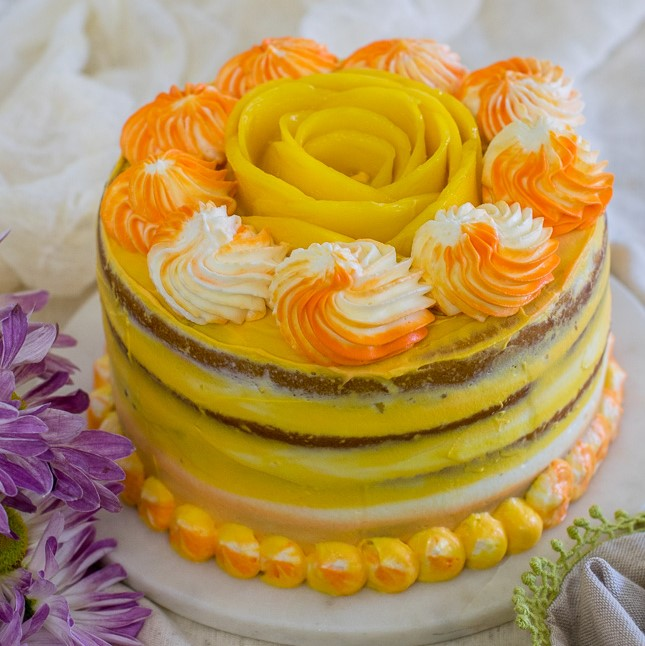
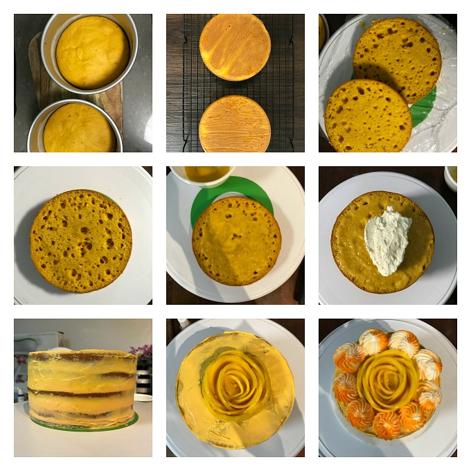

Ingredients
- 1 ½ cup all-purpose flour 217 grams
- 1 tablespoon cornstarch 10 grams
- ¼ teaspoon salt
- 1¼ teaspoon baking powder
- ½ teaspoon baking soda
- 1 teaspoon vinegar or sour lemon juice
- 1/3 cup oil 68 ml
- ¼ cup granulated sugar 47 grams
- 1 cup canned Mango Puree 264 ml (see notes)
- ½ cup milk 116ml
- 3 tablespoon water (to adjust batter consistency if it's thick)
Eggless Mango Pudding
- ½ cup mango pulp
- ½ cup water
- 2 teaspoon lemon juice
- 2 tablespoon sugar
- 1 tablespoon cornstarch
- ¼ teaspoon vanilla extract
- ½ teaspoon cardamom (optional)
For Frosting/Icing
- 1 entire recipe of sturdy whipping cream - cream cheese frosting
Mango Rose Garnish
Instructions
- Pre heat the oven at 350 deg F/ 180 deg C
Preparing the pan
- Brush two 6” cake pans or one 8” cake pan with oil on the bottom and the circumference too. Now dust it with some flour to coat the pan.
- Cut and line the pans with parchment round at the bottom.
Preparing dry and liquid ingredients
- In a large bowl sift all dry ingredients.
- In another bowl place all liquid ingredients and sugar.
- Whip until the sugar granules are almost melted.
- Now pour the liquid ingredients over the dry ingredients and whip until lump free.
- Do not overmix.
- Bake for 28-32 minutes or until the toothpick inserted in the center comes out clean.
- Once done take it out of the oven carefully.
- Let the cake cool in the pans for 10 minutes.
- Now run a butter knife around the circumference of the cake to rlease it.
- Now invert the cakes on the cooling rack to cool completely.
- Loosely cover the cakes with a muslin cloth or kitchen towel to prevent drying out.
For the mango pudding
- While the cake is baking quickly blend or whisk the ingredients called for pudding together into a smooth paste. Add more sugar if the mixture isn't sweet.
- In a non stick pan cook the mixture on low heat stirring occasionally.
- Once the pudding mixture warms up stir continuously scrapping the sides and bottom to avoid sticking.
- The pudding is done when the mixture starts to thicken up and coats the back of the spoon well.
- Mango pudding should be done under 10 minutes start to finish.
- It will thicken more after cooling down.
Assembling the cake
- Refer to the pictorial given above.
- Slice the top of the cakes to level if there is a dome.
- Cut the cakes into half.
- Now spread some mango pudding over the first layer topping it with a layer of frosting.
- Repeat for all the layers while stacking them.
- You may tint the frosting with your choice of colors.
- Now frost on the top and the sides as desired.
- Peel and cut a mango into half . Cut thin slices . Arrange the slices in a circle starting at the center to form a rose.
- Fill the icing bag with dual color frosting and pipe swirls if desired.
- Refrigerate the cake at least 2 hours before eating.
Nutrition
- Calories: 118kcal
- Carbohydrates: 17g
- Protein: 1g
- Fat: 4g
- Sodium: 73mg
- Potassium: 44mg
- Sugar: 7g
- Vitamin A: 175IU
- Vitamin C: 1mg
- Calcium: 16mg
- Iron: 1.5mg
